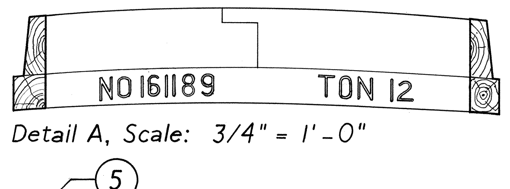

Original scan pixels: [6125, 3813, 8283, 4615]; source SHA-256: bb1d4a25c174f080601e9248d7445ea734ca6092790c4a931ddecf51de027cf3.
Native lossless view · Raw OCR · Word coordinates/confidence · Manifest

7) NOUNS TON [2 Detail A, Scale: 3/4" = |'-~O" 45)